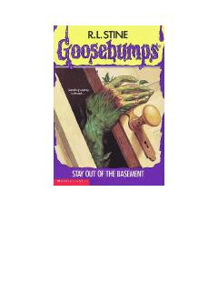

SOYerto'lada yashiringan sirli tajribalar va g'ayritabiiy o'simliklar haqidagi qo'rqinchli hikoya.
Margaret va uning ukasi Keysi otalarining g'alati xatti-harakatlari va yerto'lada olib borayotgan sirli tajribalaridan xavotirga tushishadi. Ota ishdan bo'shatilgach, u o'zini butunlay o'simliklar va noma'lum mashinalar bilan to'la yerto'laga bag'ishlaydi, bu esa oilada g'ayritabiiy voqealar boshlanishiga sabab bo'ladi.